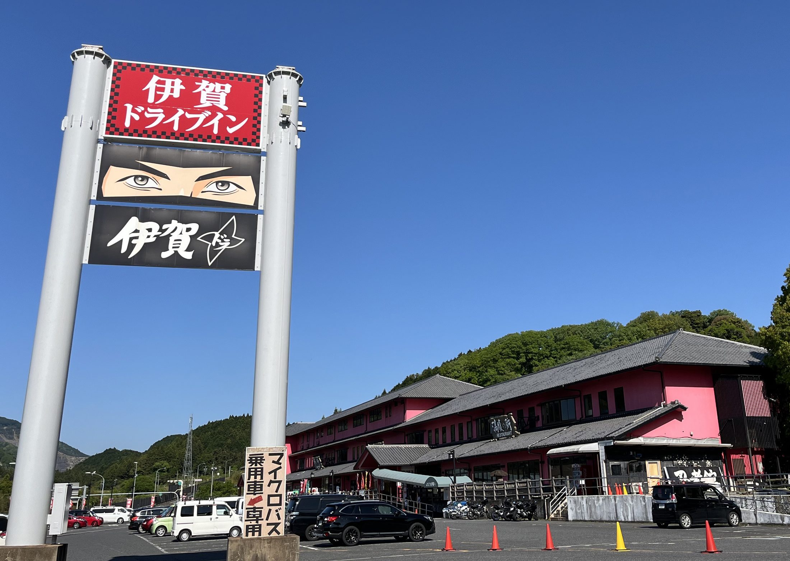
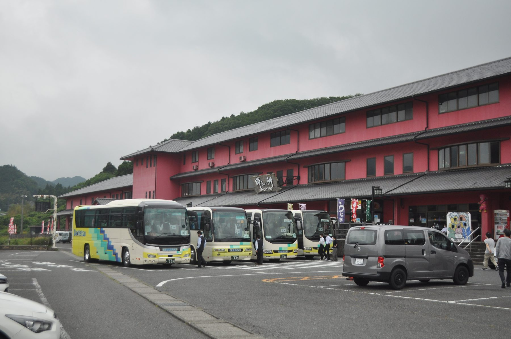
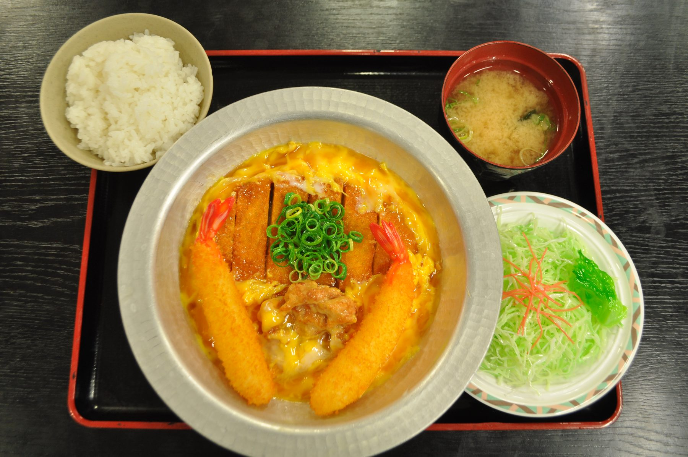
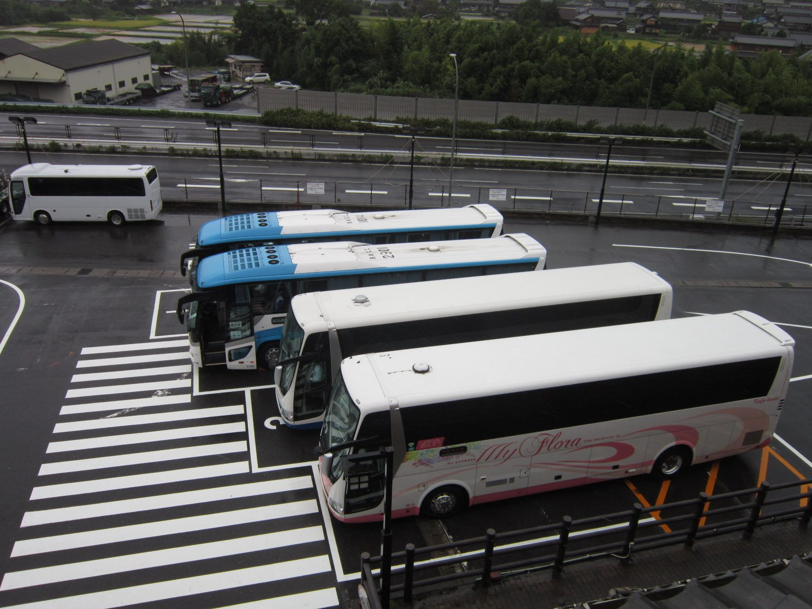
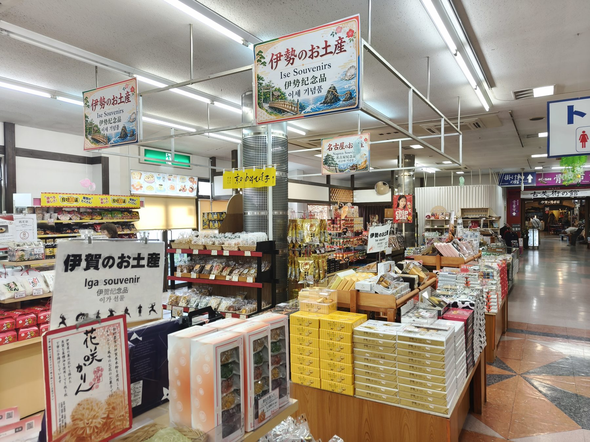
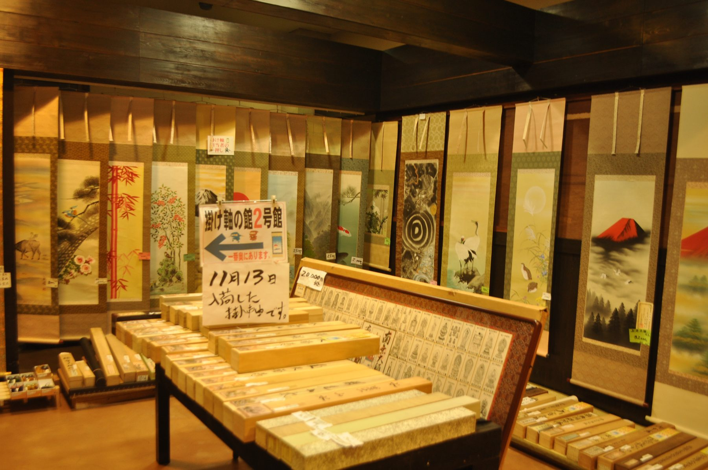
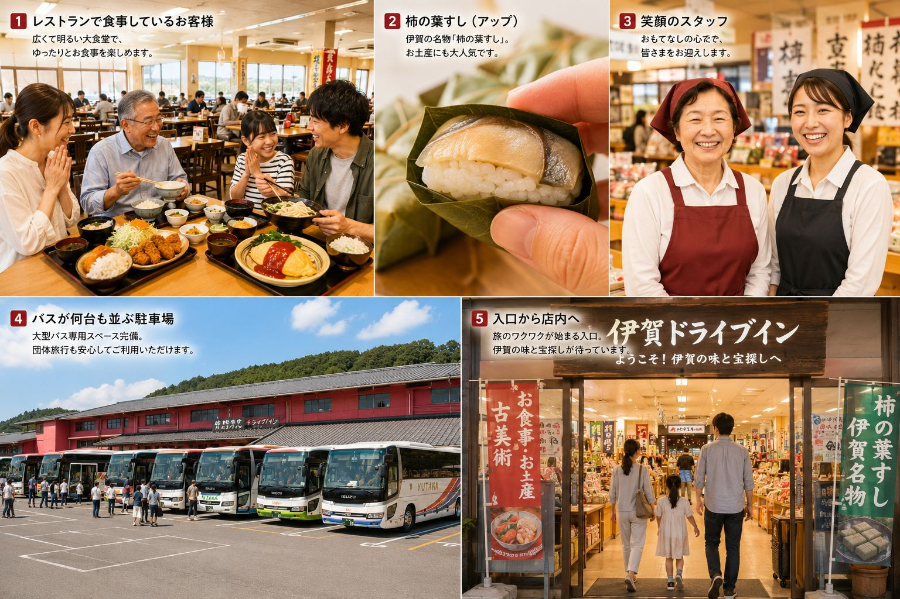
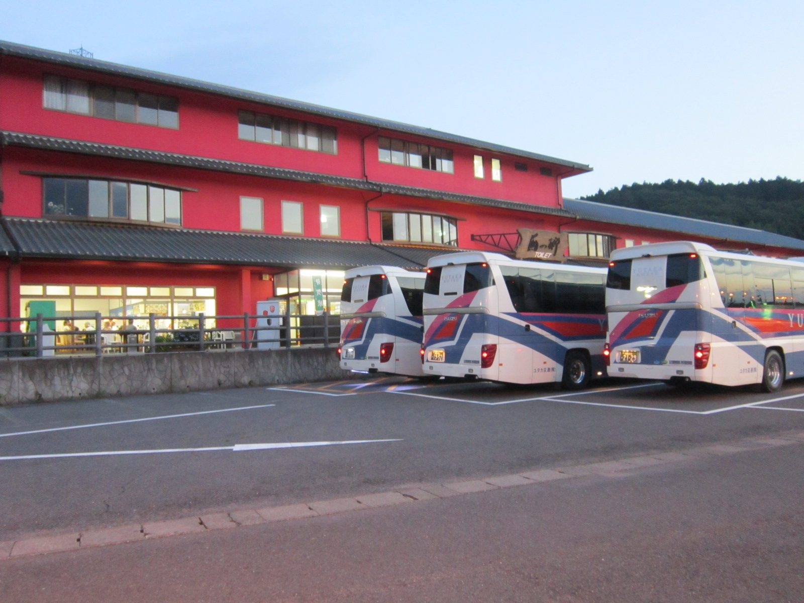
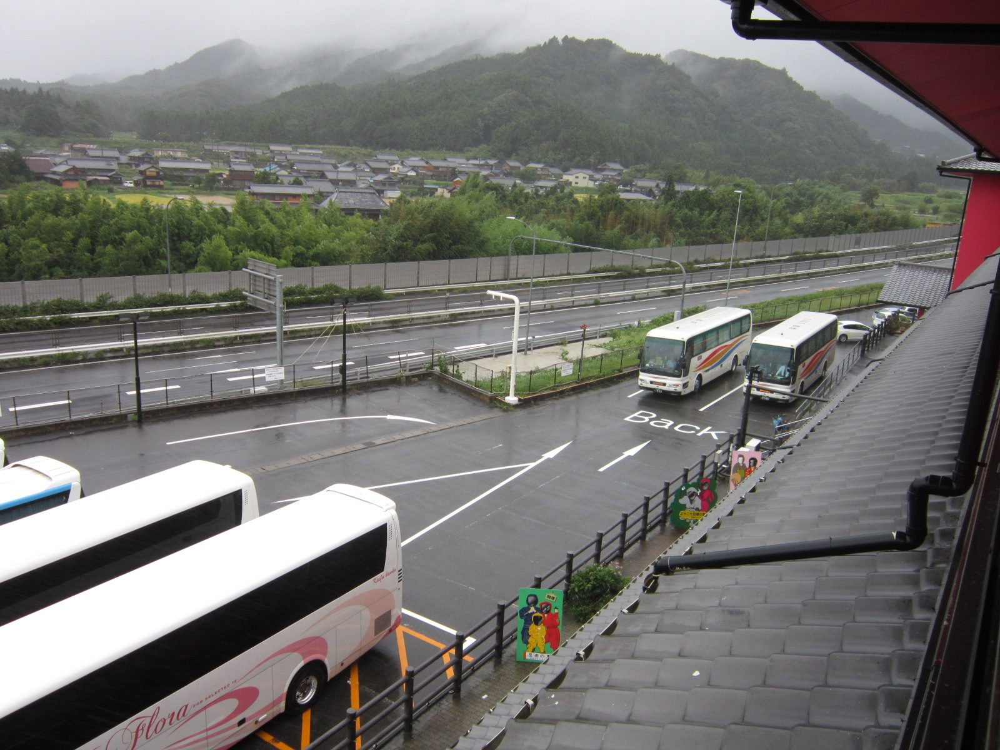

大型バスでの立ち寄りを想定した、食事・休憩・買い物の拠点です。

団体旅行でもまとまって食事しやすい、広々とした食堂をご用意しています。
名阪国道から立ち寄りやすく、旅程に組み込みやすい立地です。
食堂、お土産、柿の葉すし、古美術コーナーを一度に楽しめます。
旅の途中で、ほっとひと息
食べる・休む・買う・出会う。伊賀の時間を一度に楽しむ。
伊賀ドライブインは、名阪国道を行き交う旅人のための立ち寄り拠点。 大型食堂で腹ごしらえをして、お土産を選び、古美術コーナーで思わぬ出会いを楽しむ。 レトロな温かみと旅の高揚感が同居する、伊賀らしい休憩スポットです。

一度の立ち寄りに、いくつもの楽しみ
食堂の湯気、お土産のにぎわい、古美術の静けさ。




大型食堂完備
旅の昼食を、ゆったりと受け止める大食堂。
懐かしさのある食堂らしさはそのままに、写真を大胆に使って「おいしそう」と感じる見せ方へ。 団体旅行から家族連れまで、安心して食べられる時間をつくります。
昔ながらの大食堂
肩ひじ張らずに落ち着ける、懐かしさと温かみのある食堂です。
人気メニュー
オムライス、定食、親子丼など、幅広い年代が選びやすい食事を楽しめます。
団体昼食の相談
人数、到着時間、予算に合わせて、旅行会社様の旅程に組み込みやすくご案内します。
旅のワクワクを補うイメージ
人の笑顔と、食堂のにぎわいがある場所へ。
実写写真を中心にしながら、まだ撮影素材が足りない「食事を楽しむお客様」「笑顔のスタッフ」 の空気感だけをAIイメージで補っています。主役はあくまで実際の伊賀ドライブインです。


団体・旅行会社様へ
大型バスも安心。旅程に組み込みやすい食事・休憩拠点です。
名阪国道 伊賀ICすぐ。昼食、休憩、お土産購入、古美術コーナー散策まで、 限られた立ち寄り時間を無理なく楽しめます。
大型バスも安心
観光バスでの来店を想定し、食事・休憩・買い物までスムーズに過ごせます。
団体旅行に対応
昼食、休憩、お土産購入など、行程に合わせた立ち寄り相談ができます。
旅程に組み込みやすい
伊賀ICすぐの立地で、大阪・名古屋・京都方面からの移動途中にも便利です。
待ち時間も楽しい
古美術コーナーやお土産売場があり、食後や集合前の時間も楽しめます。
古美術コーナー
旅先で、思わぬ掘り出し物に出会う。
掛け軸、鉄瓶、茶碗、壺、刀など、市場価格よりお求めやすい品との出会いも。 伊賀ドライブイン最大の個性として、食事休憩に「宝探し」の楽しさを添えます。
思わぬ掘り出し物
掛け軸、鉄瓶、茶碗、壺、刀など、旅先ならではの出会いがあります。
お求めやすい価格
気軽に見て、選んで、持ち帰れる価格感も古美術コーナーの魅力です。
旅先で宝探し
食事休憩のついでに、忘れられない一点と出会う楽しみがあります。
宝探しの体験
見るだけでも楽しい。選べば旅の記憶になる。
古美術コーナーは、他の休憩施設にはない伊賀ドライブインらしさ。 食後の数分が、思いがけない発見の時間に変わります。
アクセス
名阪国道 伊賀ICすぐ。大阪・名古屋・京都方面の旅程に。
観光旅行の途中に立ち寄りやすい立地です。 食事、休憩、買い物、古美術散策まで、短い滞在でも満足感のある時間を過ごせます。

大型バス歓迎
観光バス・団体昼食のご相談はこちら。
人数、到着時間、食事内容、バス台数が決まっていなくても、まずはお気軽にご相談ください。